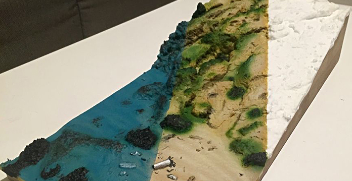

El contexto contemporáneo las instituciones de investigación científica se encuentran en la posibilidad de aprovechar las tecnologías de la información y la Internet para publicar y aprovechar la producción científica nacional e internacional. Por ello se hace necesario que los investigadores, docentes y estudiantes de las universidades e instituciones de educación superior puedan adquirir y desarrollar las habilidades en el uso de herramientas que les permitan buscar, discriminar, adquirir, gestionar y emplear todos esos recursos científicos en su práctica cotidiana. Esta Metodología está diseñada para apoyar a las instituciones de educación superior durante el proceso de diagnosticar a sus comunidades académicas y desarrollar su propio plan estratégico de uso y aprovechamiento de las iniciativas basadas en cuatro estrategias basadas en las Cinco escuelas de la Ciencia Abierta, el Acceso Abierto y el uso de las Tecnologías de la información y la comunicación (TIC) para el proceso de investigación.
